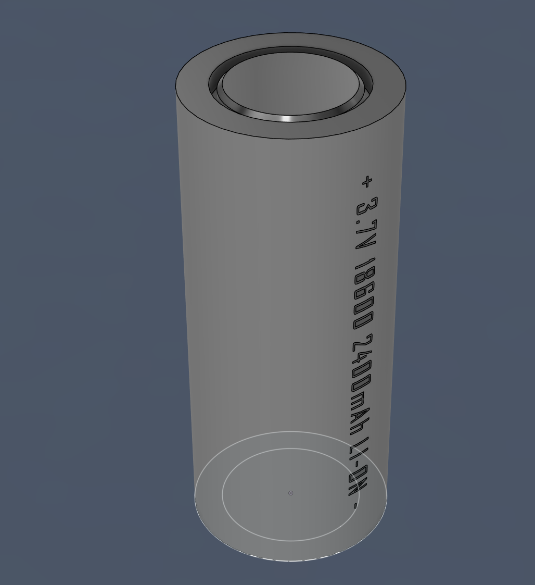
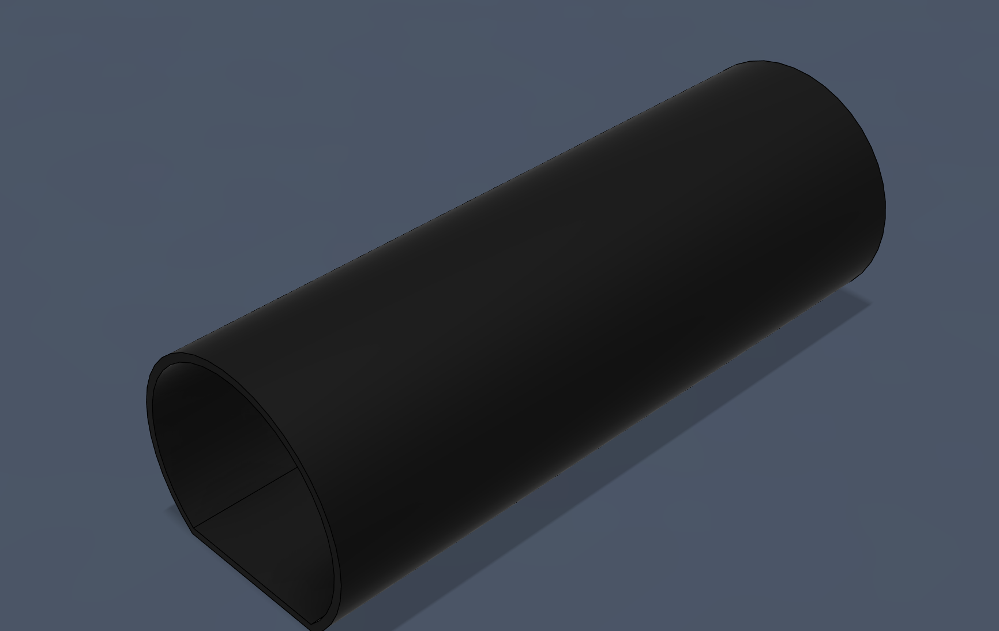
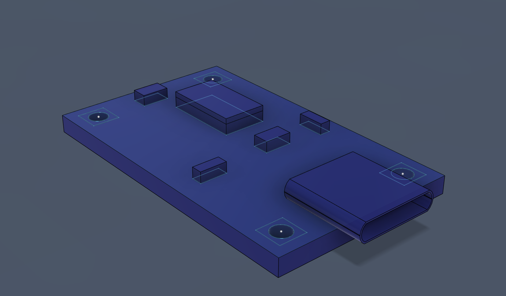
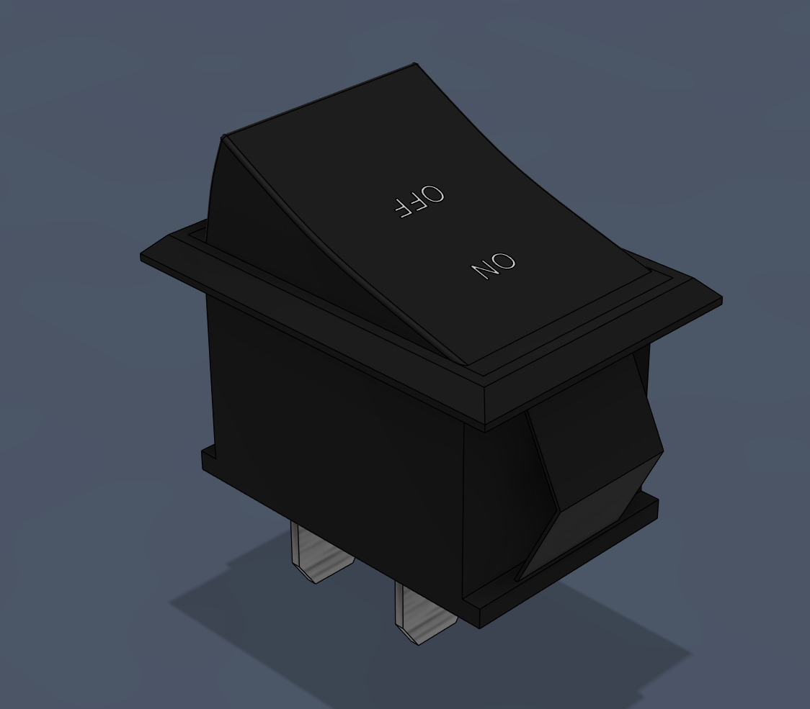
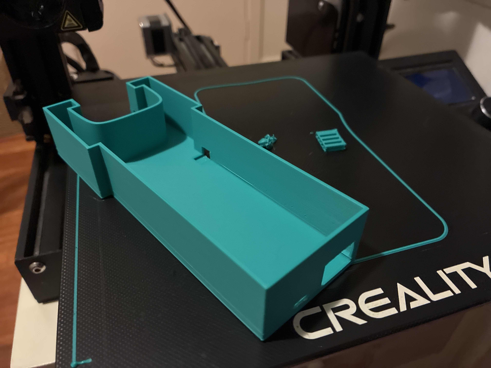
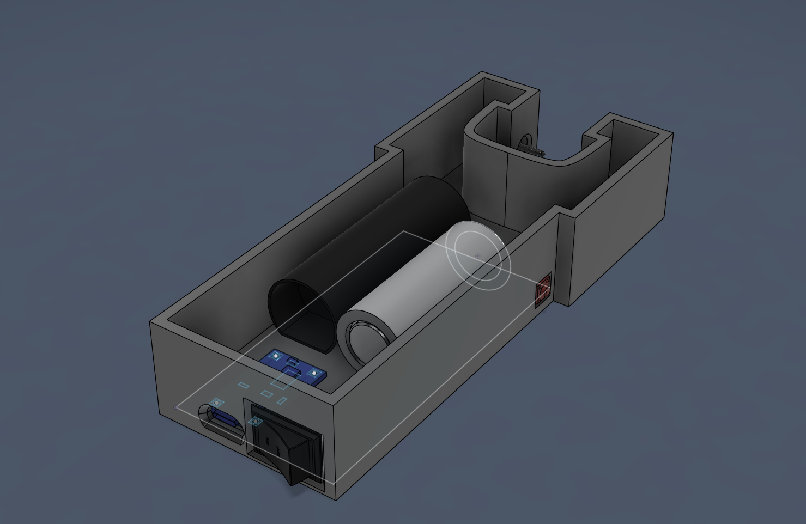
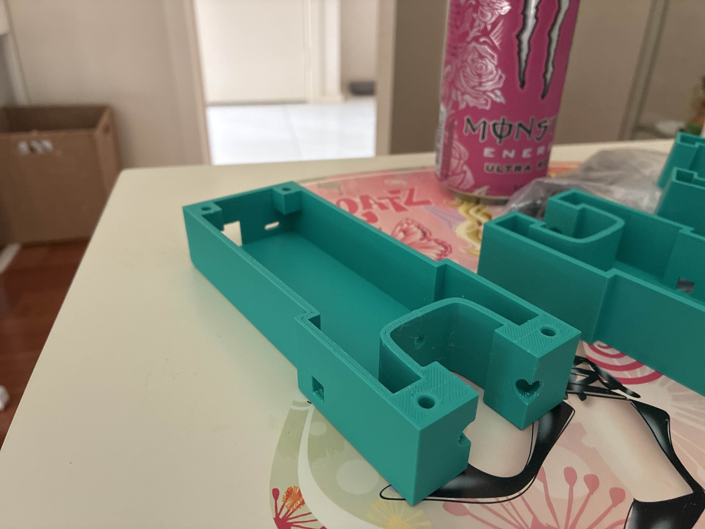
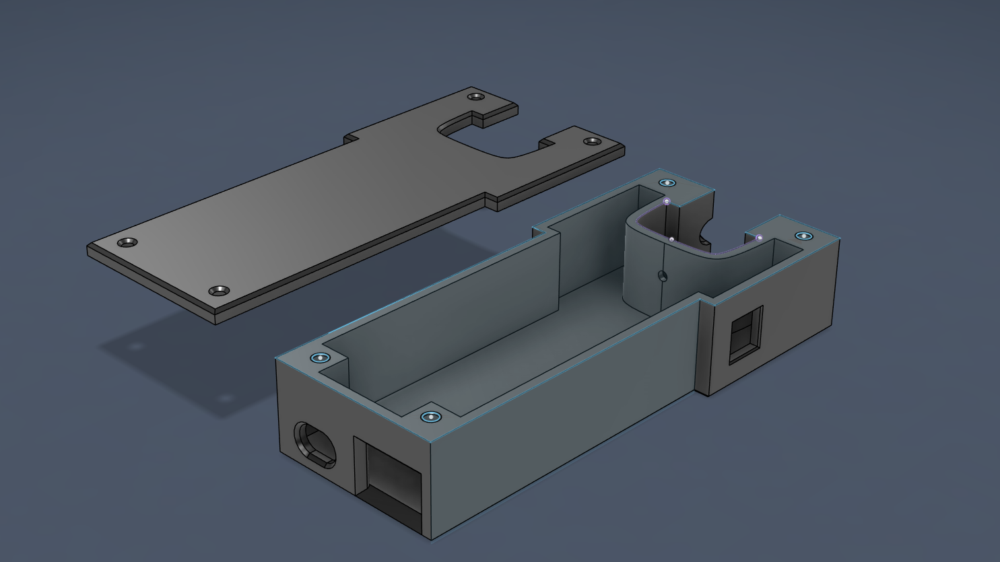

📌 Overview
I finally got my hand on a 3d printer and i wanted to test my CAD skills, and for some reason my mind told me hey designing a case for a taser would be fun and beneficial. This project tested my skill and also improved my problem solving and creative thinking, especially in the engineering field. It also enchanced our hands-on experience with tools as I had to do a quite a bit of tinkering and soldering.
The taser uses a 3.7V lithium ion battery. It recharges using a tp4056 board, has a safety switch design.
I was able to find out some useful information online about the electrical compoenents of a taser. However I found no luck for the case, so I designed the case completely on my own with nothing in reference to.
Outcome: A fully functional taser that can devliver high voltage.
🛠️ Materials & Components
Electronic
- 3.7V lithium ion battery
- Step up high voltage transfomer
- TP4056 USB C recharging board.
- Wires
- Push button
- On and Off Button
- Green LED
- 100ohm resistor
Mechanical
- PLA case
- M3 Threaded Inserts
- M3 Screws
Tools
- Soldering iron
- Hot glue gun
- Electrical Tape
- Multipurpose wire stripper.
- Scissor
STEP 1 : Model everything
To make sure all the components can fit into the case, I started by individually modelling all the components of the Taser.





STEP 2 Shell/Case design



Problems of v3
- TP4056 is still awkward, although less awkward but still could be better, hole shnould be bigger so when being used you can see the lights on the board.
- The button hole is fine but realised I have bigger better buttons at home, so next version will use that instead.
STEP 3 Actual test of the taser
🧩 Obstacles faced
Problem: the safety switch feature wouldn't work.
Solution: I learned on the spot the that the side you solder the push buttons pins matters a lot. I initially soldered incorrectly which allowed the transfomer to bypass the safety switch. That was solved by soldering correction.
Problem: The red LED would die because the resistor isn't strong enough to bring down the power of 3.7V
Solution: Using my knowledge of activation energy, I don't have access to a stronger resistor so I swapped red with green, which requires a higher activation energy. This solves the overflow of power.
STEP 4 FINALE
Still designed the v4 of the taser case, which is the final version.
